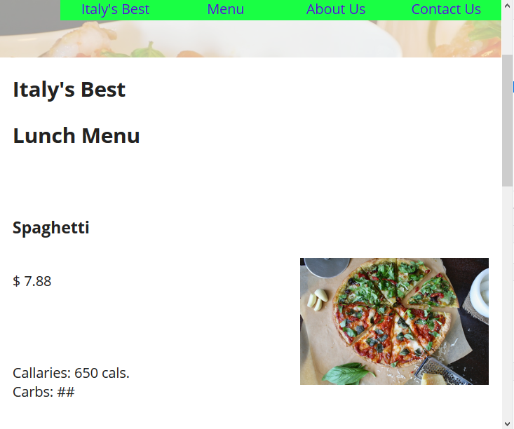
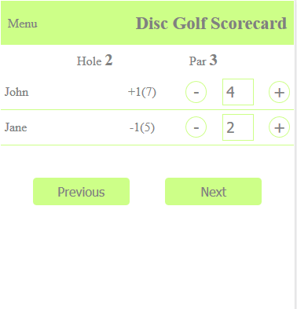
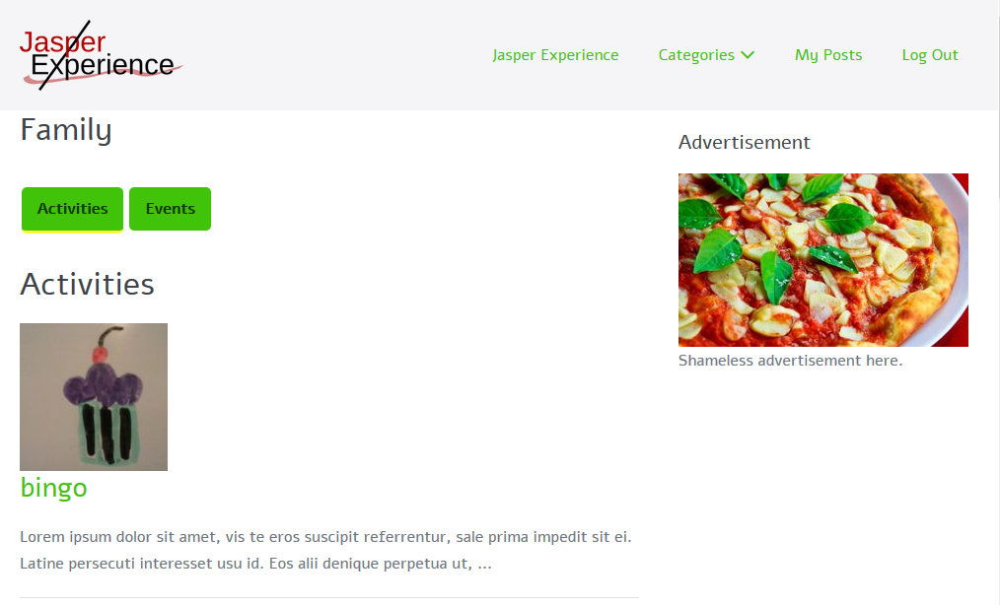
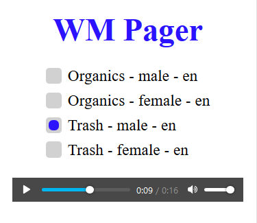

 Italy's Best website Website for a hypothetical italian restaurant. The site uses css only menu/submenu. There is PHP on the contact page for sending emails to the site owner.  Disc Golf app Progressive web app of a simple dics golf scoring app.  Jasper Experience website Wordpress website that allows users to post activities/events in Jasper County, Iowa. The site uses wordpress custom post type to store various information about the post. It is designed for the user to enter the information on the front end, instead of the wordpress admin. The site uses stock and custom plugins.  Retail Pager app Progressive Web App that allows the user to select a pre-recorded announcement to play over an intercom. The audio source file is updated when a new selection is make. Project name Description